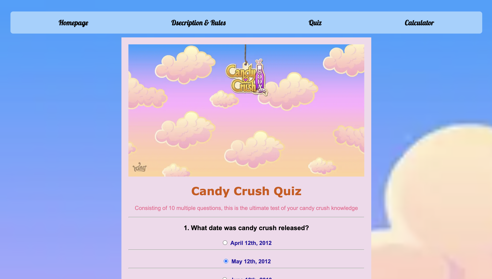
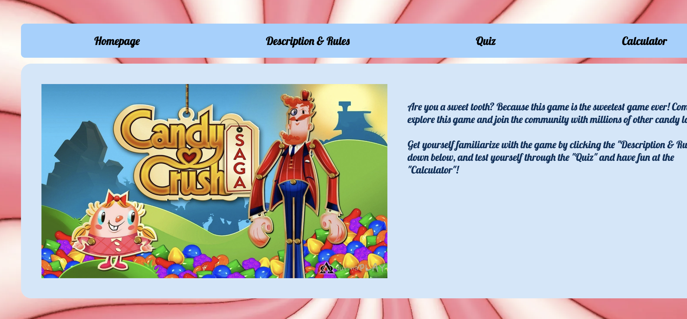

Game rule clarity
The interface needed to explain the game concept clearly so users could understand what action to take without confusion.
JavaScript / Interaction Design / Visual Feedback
A browser-based interactive game built with HTML, CSS, and JavaScript, focusing on core game mechanics, scoring logic, and responsive visual feedback.
This project involved building a simple browser-based game using front-end web technologies. The goal was to design an interactive experience that allowed users to understand the game rules, respond to visual feedback, and complete game actions through a clear interface.
Although this project is less research-focused than my other UX work, it demonstrates my ability to think about interaction logic, system feedback, and how interface behaviour can shape user experience.
The main challenge was to make the game understandable and responsive through simple interface design. Users needed to quickly recognise the goal of the game, understand how to interact with the interface, and receive feedback after each action.
The project required balancing visual style, rule explanation, scoring logic, and interaction feedback within a lightweight browser-based experience.

The interface needed to explain the game concept clearly so users could understand what action to take without confusion.
JavaScript was used to support core matching interactions and connect user actions with game logic.
The game included scoring logic to help users understand their progress and performance during play.
Interactive feedback was used to make user actions feel more responsive and to communicate the result of each interaction.

The project helped me understand how interaction design works at the implementation level, especially when interface behaviour depends on JavaScript logic.
Designing the game flow showed how important immediate feedback is for keeping users oriented during interactive tasks.
Building the game improved my ability to communicate between visual design, interaction behaviour, and technical execution.
Reflection
Building a browser-based game made me more aware of the relationship between visual interface design, system logic, and user feedback. Even simple interactions require clear rules, predictable responses, and visible feedback so users can understand what is happening and what to do next.